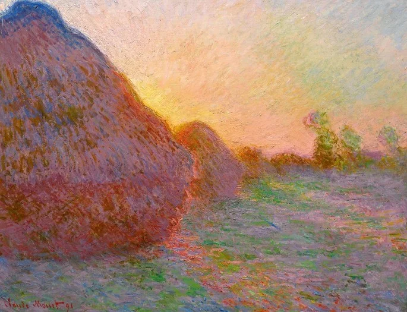

Claude Monet, nascido em 1840 em Paris, França, é amplamente considerado o pai do impressionismo, um movimento que revolucionou a pintura no final do século XIX. Conhecido por seu foco na luz e na cor, Monet buscou capturar os efeitos fugazes da natureza em suas obras. Suas séries de pinturas, como "Nenúfares", "Catedral de Rouen" e "Alamoas no Rio Epte", são célebres por suas variações atmosféricas e pelas mudanças de luz ao longo do dia e das estações.Sua abordagem inovadora e sua capacidade de transmitir a beleza efêmera do mundo natural fizeram de Monet um dos artistas mais amados e influentes de todos os tempos, cujo legado continua a inspirar artistas e admiradores.

Meules
O quadro intulado Meules é uma peça chave do Impressionismo e faz parte de uma série chamada Almiares cujas telas foram pintadas pelo artista em 1890.

Ponte Sobre Uma Lagoa de Lírios de Água
Essa provavelmente é a pintura mais famosa de Claude Monet. Em 1983, encantado pela natureza, Monet decidiu comprar uma propriedade em Giverny.

Mulher com sombrinha
O quadro pintado por Monet em 1875 também chegou a ser chamado de O Passeio e apresenta dois personagens principais: uma mulher em primeiro plano e um menino ao fundo da imagem.

Impressão, Nascer do Sol
O quadro Impression, soleil levant é considerado uma das maiores obras do artista francês. Na tela assistimos as primeiras horas de sol da manhã no porto de Le Havre. A vista foi proporcionada durante uma estadia do pintor no Hotel de l'Amirauté, localizado na região.

Catedral de Rouen: O Portal ou Luz Solar
Monet ficou tão fascinado pela suntuosa fachada da igreja que pintou mais de trinta vistas do edifício entre 1892 e 1893. Apesar de ter começado a pintar as telas em Paris, sabe-se através de registros que as pinturas foram concluídas na sua propriedade em Giverny